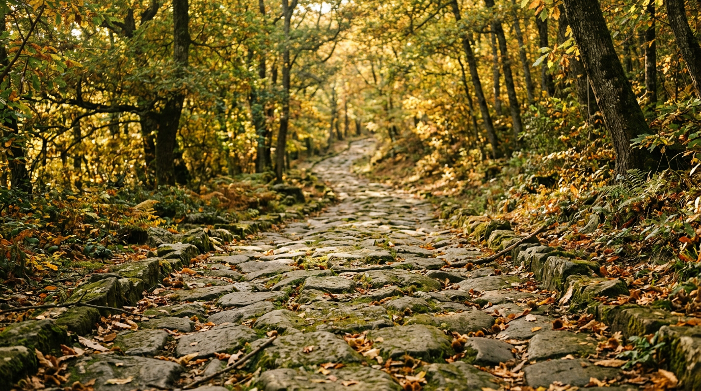

Climbing Monte Cavo — the old Roman sacred way.

From the Castel Gandolfo belvedere you can always see it: the wooded cone closing the horizon beyond the lake, crowned with antennas. It is Monte Cavo, 949 metres, the ancient Mons Albanus of the Latins. The road once walked by Rome's consuls, paved with black lava stone, still leads to the top. October, with the chestnut trees turning gold, is the best month to climb it.
The sacred mountain of the Latins
Monte Cavo is a volcanic scoria cone, the second-highest peak of the Alban Hills complex, quiescent for about ten thousand years ([Wikipedia](https://it.wikipedia.org/wiki/Monte_Cavo)). On the summit stood the sanctuary of Iuppiter Latiaris, Latin Jupiter, the most important federal cult of the Latins: originally probably an open-air sacred oak grove, linked to nearby Alba Longa ([Archeomedia](https://www.archeomedia.net/roma-il-santuario-di-giove-laziare-e-il-trionfo-albano/)). According to Dionysius of Halicarnassus the temple was built by the Tarquins while the Capitoline temple was being raised in Rome; the two sanctuaries were ideally aligned with each other ([Archeomedia](https://www.archeomedia.net/roma-il-santuario-di-giove-laziare-e-il-trionfo-albano/), [Lazio Turismo](https://www.lazioturismo.it/asp/scheda_archeo.asp?id=86)).
Here, between January and March, the Feriae Latinae were celebrated: four days of festival with representatives of 47 cities, thirty Latin and seventeen allied. Newly elected consuls had to climb up to sacrifice to Jupiter, and anyone who won a victory in war celebrated a triumph on the Alban Mount ([Wikipedia](https://en.wikipedia.org/wiki/Monte_Cavo)). The Municipality of Rocca di Papa recalls that among the commanders who came to celebrate their ovations was Julius Caesar ([Comune di Rocca di Papa](https://www.comune.roccadipapa.rm.it/home/esplorare/storia-ed-arte/aree-archeologiche/via-sacra/)).
The Via Sacra
The procession left the Appian Way at Ariccia and followed the eastern shore of Lake Albano, right across from Castel Gandolfo, as far as Palazzolo; from there the Via Sacra proper began ([Lazio Turismo](https://www.lazioturismo.it/asp/scheda_archeo.asp?id=86)). It is also called the triumphal way, and more than five kilometres survive in the woods ([Wikipedia](https://en.wikipedia.org/wiki/Monte_Cavo)). The paving stones are polygonal, smoothed on top and wedge-shaped below to anchor them in the ground; the roadway is about 2.60 metres wide, flanked by peperino kerbs ([Comune di Rocca di Papa](https://www.comune.roccadipapa.rm.it/home/esplorare/storia-ed-arte/aree-archeologiche/via-sacra/)).
It is worth watching where you step. On the first stretch some stones bear the carved letters N, V and C: for some archaeologists Novus and Vetus, marking new and repositioned stones during a restoration, while C would stand for Consul ([Archeomedia](https://www.archeomedia.net/roma-il-santuario-di-giove-laziare-e-il-trionfo-albano/)).
“The ancient road that led to the temple is, by contrast, entirely preserved.”Archeomedia — The Sanctuary of Latin Jupiter and the Alban Triumph
The route
The easiest access is from Rocca di Papa. Writer and hiker Stefano Ardito suggests starting from Piazza Di Vittorio, at 755 metres in the upper part of town, with a car park next to it and easy access by car from the Via dei Laghi. You climb along Via di Monte Cavo Campagna and Via del Prato Fabio; where the road turns to gravel you reach the Roman paving at 808 metres ([Stefano Ardito](https://www.stefanoardito.it/2023/12/08/da-rocca-di-papa-alla-via-sacra-e-al-maschio-delle-faete-parco-dei-castelli-romani-lazio/)).
After a hairpin bend with a small shrine to Saint Rita, a diagonal climb brings you in about three quarters of an hour to a belvedere with a bench at 899 metres: from here you see Lake Albano and Lake Nemi together, Circeo and the Tyrrhenian Sea. A last stretch of paving and then asphalt road leads to the summit. Those with energy to spare can follow the Cammino Naturale dei Parchi waymarks to the Maschio delle Faete, 956 metres, the highest peak in the Alban Hills: the full loop takes about 2 hours 45 minutes, with 360 metres of ascent and grade E, standard hiking ([Stefano Ardito](https://www.stefanoardito.it/2023/12/08/da-rocca-di-papa-alla-via-sacra-e-al-maschio-delle-faete-parco-dei-castelli-romani-lazio/)). Wear shoes with good grip: the smooth stones, often damp under the chestnuts, are slippery.
What remains at the top
Very little of the temple survives today, a few squared blocks of sperone stone ([Lazio Turismo](https://www.lazioturismo.it/asp/scheda_archeo.asp?id=86)). In the Middle Ages a hermitage dedicated to Saint Peter replaced it; in 1758 the Passionists of Saint Paul of the Cross arrived, and in 1783 the monastery was restored with materials from the temple at the wish of Henry Benedict Stuart, Duke of York and Bishop of Frascati. From 1890 the building became a hotel and hosted, among others, Edward VIII with Wallis Simpson ([Wikipedia IT](https://it.wikipedia.org/wiki/Monte_Cavo)). The summit is now one of Lazio's main radio and television transmission sites, with dozens of repeaters ([Wikipedia IT](https://it.wikipedia.org/wiki/Monte_Cavo)): the charm lies in the walk rather than the arrival.